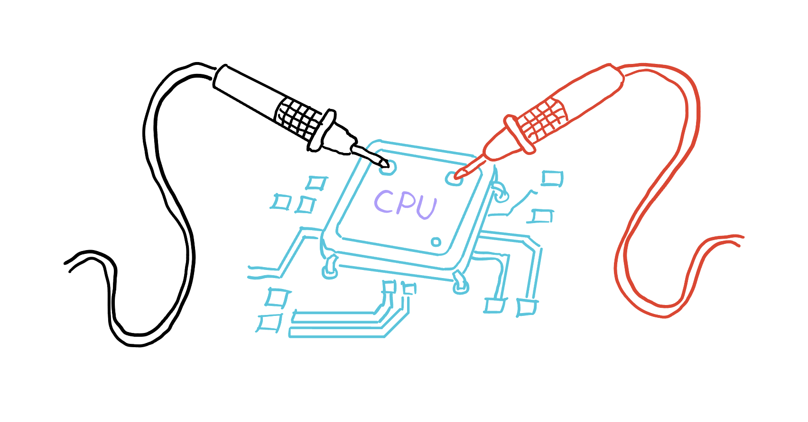
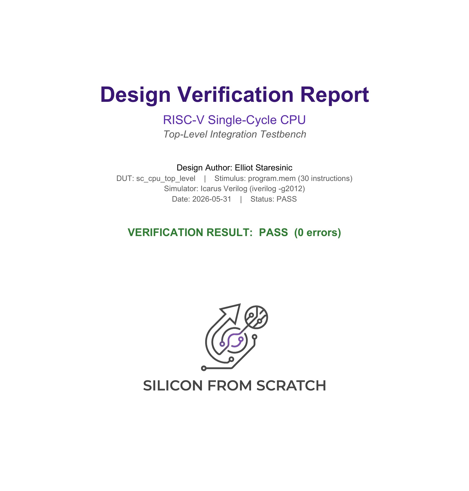
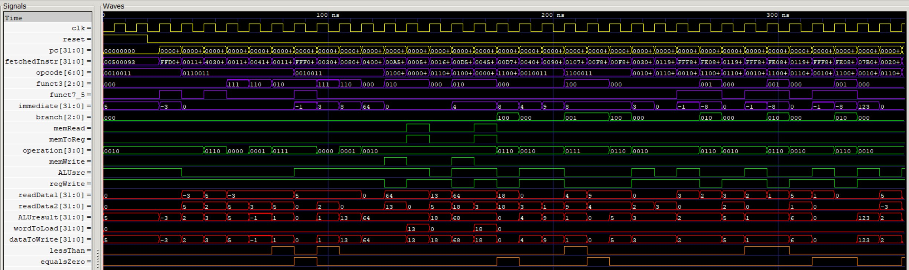
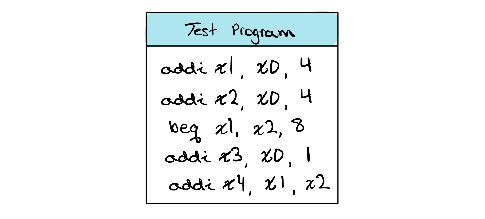

Testing Your Single Cycle CPU
We already tested our ALU, but a whole CPU is a different challenge. It remembers values and runs a complete program one clock at a time, so proving it correct takes far more than a single check. In this lesson we build a self checking testbench for the processor, and prove it works down to the very last bit.

What’s New

See the full report on GitHub The complete testbench, results, and coverageWhen we tested the ALU, we built a self checking testbench that fed the design chosen inputs, worked out the right answer a second way with an independent model, and compared the two. The same idea carries over here. What changes is the scale. The ALU was a single combinational block, while the CPU is a whole machine that runs a program over time, and that asks for two new ideas.
The first idea is that we check the entire state of the machine on every cycle, not just one number at the end. Our reference model runs alongside the processor in lockstep, advancing one instruction for every instruction the CPU executes so the two never drift apart in time. After each clock edge we compare everything, the program counter, all thirty two registers, and every word of data memory, and the testbench flags the smallest disagreement at once.
The second idea is that we check against two independent references instead of one. Alongside the lockstep model we work out the expected final state by hand and write it into a table. When the hardware, the lockstep model, and that hand worked table all agree, we can trust the design is right and that our test did not simply miss the problem.
Go back Forgot how we tested the ALU? Revisit the self checking testbench we built for the ALU.Choosing What to Test
To test the processor we hand it a short program, about thirty instructions, and let it run from start to finish. It is written like a small computation rather than a random pile of operations: early instructions load a few starting values and later ones build on them, so each result feeds naturally into the next.
The program is built for coverage. It exercises every instruction the design supports, from register arithmetic and logic with add, sub, and, or, and slt, to their immediate forms addi, andi, ori, and slti, to memory access with lw and sw, and the branches beq, bne, and blt. But running each one once is not enough, since many behave differently depending on their inputs. So a set less than is tried both true and false, an immediate add is given a positive value and a negative one, a load reads back the value an earlier store placed at the same address, and a write to x0 checks that the processor quietly ignores it.
Branches get the most attention, since each has a taken and a not-taken path through different logic, so every branch appears more than once, and a few instructions sit right after a taken branch to confirm they are skipped. Together these choices form a coverage checklist: every instruction and case we mean to reach, with anything left unchecked a gap we know about. That is how thirty instructions can give honest confidence in a processor that could one day run billions.

00500093 // addi x1, x0, 5
FFD00113 // addi x2, x0, -3
001101B3 // add x3, x2, x1
40308233 // sub x4, x1, x3
001172B3 // and x5, x2, x1
00416333 // or x6, x2, x4
001123B3 // slt x7, x2, x1
FFF0A413 // slti x8, x1, -1
0030F493 // andi x9, x1, 3
0080E513 // ori x10, x1, 8
04000593 // addi x11, x0, 64
00A5A023 // sw x10, 0(x11)
0005A603 // lw x12, 0(x11)
001606B3 // add x13, x12, x1
00D5A223 // sw x13, 4(x11)
0045A703 // lw x14, 4(x11)
00D70463 // beq x14, x13, 8
06300093 // addi x1, x0, 99
00400793 // addi x15, x0, 4
00900813 // addi x16, x0, 9
0107C463 // blt x15, x16, 8
06300113 // addi x2, x0, 99
00F84463 // blt x16, x15, 8
00F80463 // beq x16, x15, 8
00300893 // addi x17, x0, 3
01190933 // add x18, x18, x17
FFF88893 // addi x17, x17, -1
FE089CE3 // bne x17, x0, -8
07B00013 // addi x0, x0, 123
00208033 // add x0, x1, x2Check Yourself
The short program below is meant to test the beq instruction. Which case does it fail to cover?
